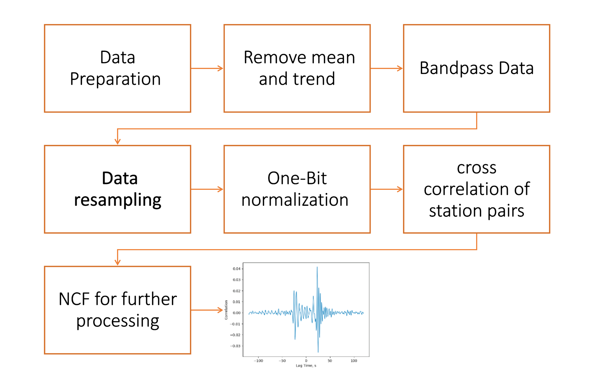

Ambient noise cross correlation¶
In this tutorial, we will introduce why and how to compute cross-correlation functions (CCFs) from seismic ambient noise data.
A Brief Introdcution of Ambient Noise Cross-correlation¶
1.1 What is Ambient Noise?¶
In seismology, the term noise refers to ground motion which is recorded in the absence of an identifiable source of seismic energy, such as an earthquake. In particular, seismic noise is the weak, low-frequency seismic signal originating from randomly distributed sources. The continuous interaction of low frequency (<1Hz) oceanic surface waves (swells) with the Earth’s crust is the main cause of natural ambient noise and is observed globally (Aki and Richards).
It is often discarded and cannot be used for geophysical applications, but not always. Seismic noise can be utilized for earth imaging in the border sense, i.e., structural analysis of crust, global tomography, and monitoring velocity changes along faults and volcanic regions. For instance, the cross-correlation of seismic noise reflects the medium properties along the prorogation path.
Note
This process is known as Seismic noise interferometry (SNI).
1.2 Ambient noise cross correlation¶
Given two seismometers, \(u_1\) and \(u_2\), placed at some distance apart on the surface, the stations will record ground motion as a function of time: \(u_1(t)\) and \(u_2(t)\). Over long periods of time, the cross-correlation of ground motions of \(u_1(t)\) and \(u_2(t)\)
yields a band-limited approximation of the elastodynamic Green’s function, or impulse response, between \(u_1\) and \(u_2\). We call \(C_{12}(\tau)\) the time-domain cross-correlation function.

Figure 01: Typical setup for Ambient Noise Cross-Correlation
A useful way to understand the role of cross-correlation in SNI is that it highlights the traveltimes of seismic waves. A wavefield which has travelled between two stations will cause a similar signal to be recorded at each, shifted in time: the cross-correlation function (CCF) of the records will therefore contain a peak at a time lag which corresponds to the traveltime of the wavefield between the two stations (Fig.2).

Figure 02: (a) a source of seismic energy (left) is recorded at receivers R1 and R2, causing identical signals separated by a time τ (right), corresponding to the travel time of the wavefield between the receivers. (b) the cross-correlation function of the two records,on which the traveltime is highlighted as a peak.!
Cross-correlation is performed for positive and negative time lags, so CCFs have both positive (“causal”) and negative (“acausal”) parts. Oceanic noise arrives from all directions, and the noise records which are cross-correlated during SNI therefore contain energy which has travelled in both directions along an interstation path.
GFs which emerge on noise cross-correlation functions (NCFs) will therefore contain energy in both the causal and acausal parts, symmetric about zero time lag: the causal part representing energy arriving at station B in response to an impulsive source at station A, and the acausal part energy arriving at station A in response to a source at station B (Fig.3). Because GFs are usually assumed to be the same in both directions along a path, the two sides of an NCF can be treated as representing exactly the same information, but reversed in time.

Figure 3.Causal and anticausal parts of an NCF. (a) Idealised NCF for the cross-correlation order station A to station B. The arrows indicate the energy path which is represented by the positive and negative parts of the cross-correlation function. (b) Representation of the noise sources which (theoretically) contribute to the causal and anticausal part of the station A - station B NCF
1.3 Workflow:¶
{kind=link}
Figure 04: Schematic representation of the data processing scheme
1.4 Data Preparation and inital processing¶
The basic step in the data processing method is to prepare waveform data from each station separately. The goal of this phase is to accentuate broad-band ambient noise by removing earthquake signals and instrumental irregularities that tend to obscure it.
The mean and trend are removed from the data (“rmean” and “rtrend” respectively).
The bandpass filtering is applied on data
In order to further down-weight the contribution of high-energy arrivals which could obscure the lower amplitude ambient noise signal, a “one-bit” normalisation is applied after various authors (e.g. Stehly et. al. (2007))
Do cross correlation between station pairs
Tutorial¶
2.1 Import useful packages from Python library¶
import obspy
import numpy as np
from obspy import Stream
from obspy.geodetics import gps2dist_azimuth
import matplotlib.pyplot as plt
2.2 Stations information¶
sta1_lon = 104.462283; sta1_lat = 29.409383
sta2_lon = 104.483083; sta2_lat = 29.478317
dist_m,_,_ = gps2dist_azimuth(sta1_lat,sta1_lon,sta2_lat,sta2_lon)
dist_km = dist_m/1000
Note
Station information can also be directly extracted using obspy.
2.3 Bandpass filter¶
period_min = 2
period_max = 5
st.filter("bandpass",freqmin=1/period_max,freqmax=1/period_min,zerophase=True)
st_bak = st.copy() #keep a copy of orignal data
st.plot();
2.4 Plot the waveoforms¶
st = Stream()
st1 = obspy.read("GS020_BHZ_20200512.mseed") # Load 1 Day Data from Station GS020
st.append(st1[0])
st2 = obspy.read("ML17_BHZ_20200512.mseed") # Load 1 Day Data from Station ML17
st.append(st2[0])
st.detrend("linear")
st.detrend("constant")
st.plot();
2.5 Down-sampling Data¶
Note
Ambient noise generally conducted in low frequency range, it will reduce computation cost if data is down-sampled.
print(f"Before down-sampling, station {st[0].stats.station} has data points {st[0].stats.npts} with sampling rate {st[0].stats.sampling_rate}")
st[0].decimate(factor=5)
print(f"Before down-sampling, station {st[0].stats.station} has data points {st[0].stats.npts} with sampling rate {st[0].stats.sampling_rate}")
print(f"Before down-sampling, station {st[1].stats.station} has data points {st[1].stats.npts} with sampling rate {st[1].stats.sampling_rate}")
st[1].decimate(factor=5)
print(f"Before down-sampling, station {st[1].stats.station} has data points {st[1].stats.npts} with sampling rate {st[1].stats.sampling_rate}")
fs_new = st[0].stats.sampling_rate
Before down-sampling, station GS020 has data points 8640001 with sampling rate 100.0
Before down-sampling, station GS020 has data points 1728001 with sampling rate 20.0
Before down-sampling, station ML17 has data points 8640001 with sampling rate 100.0
Before down-sampling, station ML17 has data points 1728001 with sampling rate 20.0
Note
data is resampled from 100 to 20 Hz.
2.6 One-bit Normalization¶
To remove the non-stationary events that inevitably lie in seismic records, the so-called one-bit normalization is commonly applied to the noise data. This processing consists of replacing each sample of a record by its sign.
Note
In “one-bit” normalisation, each data point is replaced with either a 1 or -1, depending on its sign, which remove the amplitude information from the data.
st = st_bak.copy()
st[0].data = np.sign(st[0].data)
st[1].data = np.sign(st[1].data)
starttime = st[0].stats.starttime
st.plot(starttime=starttime,endtime=starttime+100 );
{kind=link}
2.7 Conduct Cross-Correlation¶
max_lagtime = 50
max_shift_num = int(np.round(max_lagtime*st[0].stats.sampling_rate))
data1 = st[0].data
data2 = st[1].data
len1 = len(data1)
len2 = len(data2)
min_len = min(len1,len2)
cross_list = []
for shift_num in np.arange(-max_shift_num,max_shift_num+1,1):
if shift_num<0:
correlate_value = np.correlate(data1[:min_len+shift_num],data2[-shift_num:min_len])
cross_list.append(correlate_value.ravel())
else:
correlate_value = np.correlate(data2[:min_len-shift_num],data1[shift_num:min_len])
cross_list.append(correlate_value.ravel())
cross_list = np.array(cross_list)
cross_list = cross_list/np.max(cross_list)
2.8 Plot Results¶
time = np.linspace(-max_lagtime,max_lagtime,int(2*max_lagtime*fs_new+1))
plt.plot(time,cross_list)
plt.xlabel("Time (s)")
plt.ylabel("Cross-correlation Coefficient")
plt.xlim(-max_lagtime,max_lagtime)
{kind=link}
2.5 References:¶
Bensen, G. D., M. H. Ritzwoller, M. P. Barmin, A. Lin Levshin, Feifan Lin, M. P. Moschetti, N. M. Shapiro, and Yanyan Yang. “Processing seismic ambient noise data to obtain reliable broad-band surface wave dispersion measurements.” Geophysical journal international 169, no. 3 (2007): 1239-1260.
Tutorial 6 - Seismic noise interferometry http://volc_seis_commission.leeds.ac.uk/indexa63d.html
Stehly, L., Campillo, M., and Shapiro, N.M. Traveltime measurements from noise correlation: stability and detection of instrumental time shifts. Geophys. J. Int. (2007) 171 223-230.
SeisNoise.jl GPU Computing Tutorial https://nextjournal.com/thclements/seisnoisejl-gpu-computing-tutorial